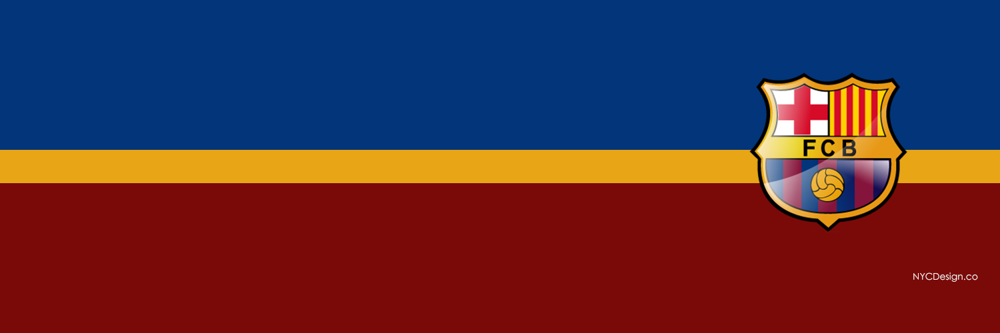
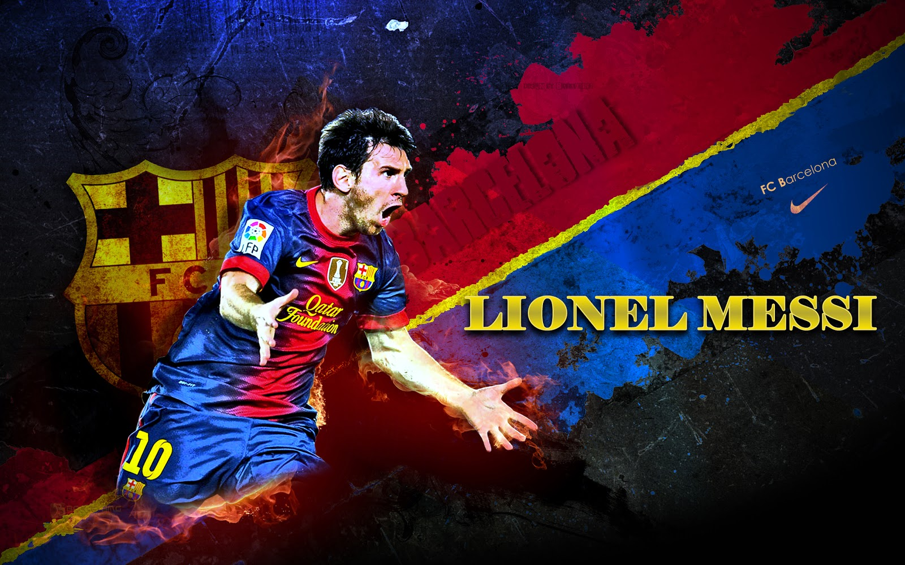
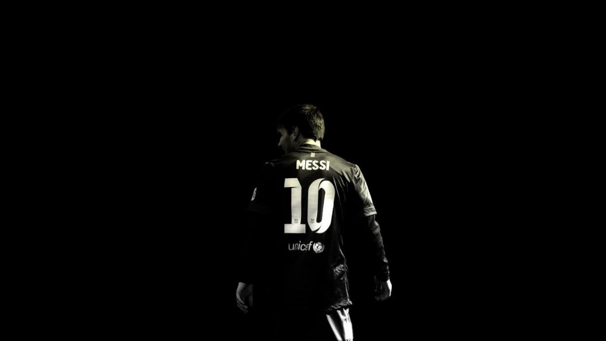
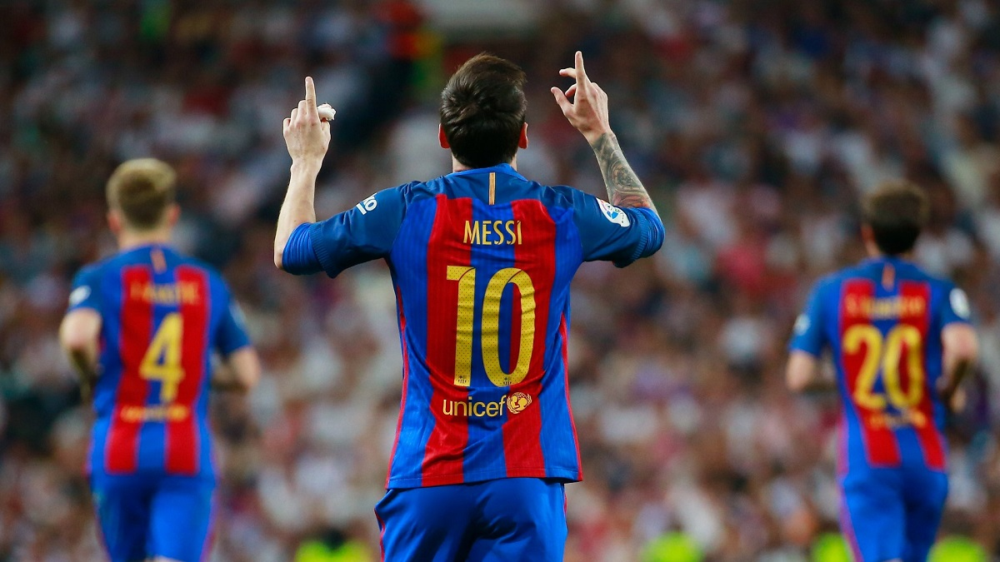
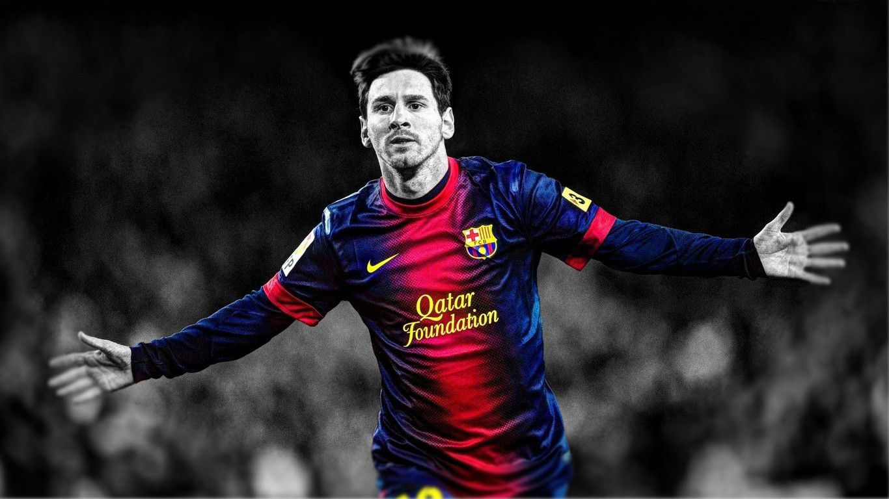
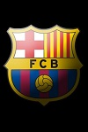
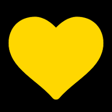

   
My Name
Lionel Andrés "Leo" Messi"(Spanish pronunciation: [ljoˈnel anˈdɾes ˈmesi] (About this sound listen); born 24 June 1987) is an Argentine professional footballer who plays as a forward for Spanish club FC Barcelona and the Argentina national team. Often considered the best player in the world and regarded by many as the greatest of all time, Messi is the only player in history to win five FIFA Ballon d'Or awards, four of which he won consecutively, and a record-tying four European Golden Shoes. He has won 30 trophies with Barcelona, including eight La Liga titles, four UEFA Champions League titles, and five Copas del Rey. Both a prolific goalscorer and a creative playmaker, Messi holds the records for most official goals scored in La Liga (349), a La Liga season (50) and a club football season in Europe (73), as well as those for most assists made in La Liga (137) and the Copa América (11). He has scored over 500 senior career goals for club and country.
Born and raised in central Argentina, Messi was diagnosed with a growth hormone deficiency as a child. At age 13, he relocated to Spain to join Barcelona, who agreed to pay for his medical treatment. After a fast progression through Barcelona's youth academy, Messi made his competitive debut aged 17 in October 2004. Despite being injury-prone during his early career, he established himself as an integral player for the club within the next three years, finishing 2007 as a finalist for both the Ballon d'Or and FIFA World Player of the Year award, a feat he repeated the following year. His first uninterrupted campaign came in the 2008–09 season, during which he helped Barcelona achieve the first treble in Spanish football. At 22 years old, Messi won the Ballon d'Or and FIFA World Player of the Year award by record voting margins. Three successful seasons followed, with Messi winning three consecutive FIFA Ballons d'Or, including an unprecedented fourth. His personal best campaign statistically to date was the 2011–12 season, in which he set the La Liga and European records for most goals scored in a single season, while establishing himself as Barcelona's all-time top scorer in official competitions in March 2012. He again struggled with injury during the following two seasons, twice finishing second for the Ballon d'Or behind Cristiano Ronaldo, his perceived career rival. Messi regained his best form during the 2014–15 campaign, breaking the all-time goalscoring records in both La Liga and the Champions League in November 2014,and led Barcelona to a historic second treble.
Personal Life
Since 2008, when he was 20, Messi has been in a relationship with Antonella Roccuzzo, a fellow native of Rosario. He has known Roccuzzo since he was five years old, as she is the cousin of his best friend since childhood, Lucas Scaglia , who is also a football player. After keeping their relationship private for a year, Messi first confirmed their romance in an interview in January 2009, before going public a month later during a carnival in Sitges after the Barcelona–Espanyol derby. He had previously been romantically linked with Argentine models Macarena Lemos and Luciana Salazar . Messi and Roccuzzo have two sons: Thiago (born 2012) and Mateo (born 2015). To celebrate his partner's first pregnancy, Messi placed the ball under his shirt after scoring in Argentina's 4–0 win against Ecuador on 2 June 2012, before confirming the pregnancy in an interview two weeks later . Thiago was born in Barcelona on 2 November 2012, with Messi attending the birth after being given permission by Barcelona to miss training. He announced his son's arrival on his Facebook page, writing, "Today I am the happiest man in the world, my son was born and thanks to God for this gift . Thiago's name and handprints are tattooed on his left calf.In April 2015, Messi confirmed on Facebook that they were expecting another child . He missed training ahead of a match against Atlético Madrid to attend the birth of his second son, Mateo, on 11 September 2015 in Barcelona.] On 30 June 2017, he married Roccuzzo at a luxury hotel named Hotel City Center in Rosario with about 260 guests attending his wedding. Messi enjoys a close relationship with his immediate family members, particularly his mother, Celia, whose face he has tattooed on his left shoulder. His professional affairs are largely run as a family business: his father, Jorge, has been his agent since he was 14, and his oldest brother, Rodrigo, handles his daily schedule and publicity. His mother and other brother, Matías, manage his charitable organisation, the Leo Messi Foundation, and take care of personal and professional matters in Rosario. Since leaving for Spain at age 13, Messi has maintained close ties to his hometown of Rosario, even preserving his distinct Rosarino accent. He has kept ownership of his family's old house, although it has long stood empty; he maintains a penthouse apartment in an exclusive residential building for his mother, as well as a family compound just outside the city. Once when he was in training with the national team in Buenos Aires, he made a three-hour trip by car to Rosario immediately after practice to have dinner with his family, spent the night with them, and returned to Buenos Aires the next day in time for practice. Messi keeps in daily contact via phone and text with a small group of confidants in Rosario, most of whom were fellow members of "The Machine of '87" at Newell's Old Boys. Although considered a one-club man, he has long planned to return to Rosario to end his playing career at Newell's. He was on bad terms with the club after his transfer to Barcelona, but by 2012 their public feud had ended, with Newell's embracing their ties with Messi, even issuing a club membership card to his newborn son.
Style Of Play 
Due to his short stature, Messi has a lower centre of gravity than taller players, which gives him greater agility, allowing him to change direction more quickly and evade opposing tackles; this has led the Spanish media to dub him La Pulga Atómica ("The Atomic Flea"). Despite being physically unimposing, he possesses significant upper-body strength, which, combined with his low centre of gravity and resulting balance, aids him in withstanding physical challenges from opponents; he has consequently been noted for his lack of diving in a sport rife with playacting. His short, strong legs allow him to excel in short bursts of acceleration while his quick feet enable him to retain control of the ball when dribbling at speed. His former Barcelona manager Pep Guardiola once stated, "Messi is the only player that runs faster with the ball than he does without it." Although he has improved his ability with his weaker foot since his mid-20s, Messi is predominantly a left-footed player; with the outside of his left foot, he usually begins dribbling runs, while he uses the inside of his foot to finish and provide passes and assists. A prolific goalscorer, Messi is known for his finishing, positioning, quick reactions, and ability to make attacking runs to beat the defensive line. He also functions in a playmaking role, courtesy of his vision and precise passing, and is an accurate free kick and penalty kick taker,though his ability on penalties has somewhat deteriorated in recent seasons. His pace and technical ability enable him to undertake individual dribbling runs towards goal, in particular during counterattacks, usually starting from the halfway line or the right side of the pitch. Widely considered to be the best dribbler in the world,and one of the greatest of all time, with regard to this ability, his former Argentina manager Diego Maradona has said of him, "The ball stays glued to his foot; I've seen great players in my career, but I've never seen anyone with Messi's ball control." Beyond his individual qualities, he is also a well-rounded, hard-working team player, known for his creative combinations, in particular with Barcelona midfielders Xavi and Andrés Iniesta. Tactically, Messi plays in a free attacking role; a versatile player, he is capable of attacking on either wing or through the centre of the pitch. His favoured position in childhood was the playmaker behind two strikers, known as the enganche in Argentine football, but he began his career in Spain as a left-winger or left-sided forward. Upon his first-team debut, he was moved onto the right wing by manager Frank Rijkaard; from this position, he could more easily cut through the defence into the middle of the pitch and curl shots on goal with his left foot, rather than predominantly cross balls for teammates. Under Guardiola and subsequent managers, he most often played in a false nine role; positioned as a centre-forward or lone striker, he would roam the centre, often moving deep into midfield and drawing defenders with him, in order to create and exploit spaces for passes, dribbling runs or combinations with Xavi and Iniesta. Under the stewardship of Luis Enrique, Messi returned to playing in the right-sided position that characterised much of his early career,while also being deployed in a deeper, free role. With the Argentina national team, Messi has similarly played anywhere along the frontline; under various managers, he has been employed on the right wing, as a false nine, or in a deeper, creative role as a classic number 10 or attacking midfielder.
Honours
| Club : Barcelona |
|---|
| La Liga: 2004–05, 2005–06, 2008–09, 2009–10, 2010–11, 2012–13, 2014–15, 2015–16 |
| Copa del Rey: 2008–09, 2011–12, 2014–15, 2015–16, 2016–17 |
| Supercopa de España: 2006, 2009, 2010, 2011, 2013, 2016 |
| UEFA Champions League: 2005–06, 2008–09, 2010–11, 2014–15 |
| UEFA Super Cup: 2009, 2011, 2015 |
| FIFA Club World Cup: 2009, 2011, 2015 |
| Individual Awards |
|---|
| Ballon d'Or/FIFA Ballon d'Or: 2009, 2010, 2011, 2012, 2015 |
| European Golden Shoe: 2010, 2012, 2013, 2017 |
| FIFA World Cup Golden Ball: 2014 |
| FIFA World Player of the Year: 2009 |
| Copa América Most Valuable Player: 2015 (rejected) |
| UEFA Best Player in Europe: 2011, 2015 |
| UEFA Club Footballer of the Year: 2009 |
| UEFA Club Forward of the Year: 2009 |
| World Soccer World Player of the Year: 2009, 2011, 2012, 2015 |
| Onze d'Or: 2009, 2010–11, 2011–12 |
| Globe Soccer Awards Best Player of the Year: 2015 |
| Best Player in La Liga: 2009, 2010, 2011, 2012, 2013, 2015 |
| Best Forward in La Liga: 2009, 2010, 2011, 2012, 2013, 2015, 2016 |
| FIFA Club World Cup Golden Ball: 2009, 2011 |
| FIFA Club World Cup Final Most Valuable Player: 2009, 2011 |
| Olimpia de Plata (Argentine Footballer of the Year): 2005, 2007, 2008, 2009, 2010, 2011, 2012, 2013, 2015, 2016 |
| Records |
|---|
| Most (FIFA) Ballons d'Or: 5 (2009–12, 2015) |
| Most consecutive Ballons d'Or: 4 |
| Youngest two-time and three-time Ballon d'Or winner: 23 and 24 years old |
| Top goalscorer in the history of FIFA Club World Cup: 5 goals (shared with César Delgado, Luis Suárez and Cristiano Ronaldo) |
| Guinness World Record as top goalscorer for club and country in a calendar year: 91 goals in 2012 |
| Top goalscorer in all club competitions in a calendar year: 79 goals in 2012 |
| Top goalscorer in a club season: 73 goals in 2011–12 |
| Longest goalscoring run in a domestic league: 21 matches, 33 goals in 2012–13 |
| Only player to have won more than one FIFA Club World Cup Golden Ball |
| Only player to have won more than one FIFA Club World Cup Final Most Valuable Player award |
| Globe Soccer Awards Best Player of the Year: 2015 |
| Best Player in La Liga: 2009, 2010, 2011, 2012, 2013, 2015 |
| Best Forward in La Liga: 2009, 2010, 2011, 2012, 2013, 2015, 2016 |
| FIFA Club World Cup Golden Ball: 2009, 2011 |
| FIFA Club World Cup Final Most Valuable Player: 2009, 2011 |
| Olimpia de Plata (Argentine Footballer of the Year): 2005, 2007, 2008, 2009, 2010, 2011, 2012, 2013, 2015, 2016 |
| Records : Spain |
|---|
| Most Best Player in La Liga awards: 6 (2009–13, 2015) |
| Top goalscorer in La Liga: 349 goals |
| Top assist provider in La Liga: 137 assists |
| Top goalscorer in the Supercopa de España: 12 goals |
| Top goalscorer in a La Liga season: 50 goals in 2011–12 |
| Most braces scored in La Liga: 10 |
| Most hat-tricks scored in a La Liga season: 8 in 2011–12 (shared with Cristiano Ronaldo) |
| Most teams scored against in a season: 19 in 2012–13 (shared with Ronaldo and Cristiano Ronaldo) |
| Only player to score consecutively against all opposition teams in La Liga: 19 matches, 30 goals in 2012–13 |
| First player to reach 300 La Liga goals |
| Youngest player to score 200 goals in La Liga: 25 years and 7 months in January 2013 |
| Top goalscorer in El Clásico: 23 goals |
| Top goalscorer in the Derbi barceloní: 17 goals |
| Top goalscorer in official competitions: 507 goals |
| Top goalscorer including friendlies: 539 goals |
| Top goalscorer in the UEFA Champions League: 94 goals |
Fan Club 
Connect With Me...!

Powered by FcBarcelona.